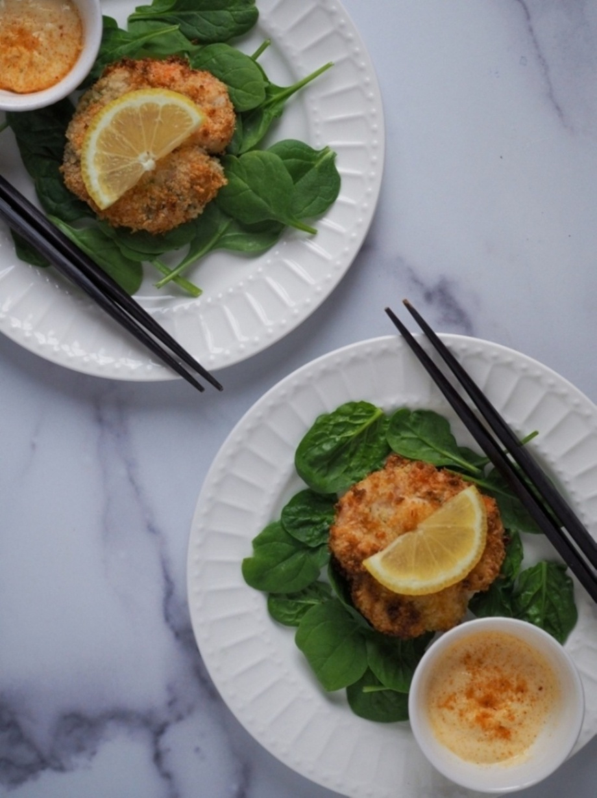

Air Fryer Panko Shrimp Cutlet
Crispy succulent whole shrimps shaped into cutlets and coated in panko breadcrumbs. Baked in the air fryer until golden brown, It can be served as an appetizer, with rice, or as a burger patty.
Yield: 4 Servings
Prep Time: 25 minutes
Cook Time: 15 minutes
Ingredients
- Approximately 20 medium sized shrimp (skin peeled)
- Salt
- Pepper
- Garlic Powder
- 2 cups panko breadcrumbs, combined with 1 tbsp of olive oil
- 1/4 cup all purpose flour
- 1 egg
- Olive oil
- Lemon slices
- Kewpie mayo
Directions
- Lay 4-5 shrimp inside an upside-down mason jar lid (or something similar), using it to form 4 or 5 round patty shapes.
- Dredge each shrimp patty in the flour taking care to maintain the patty shape. Coat completely and pat off the excess flour.
- Dip into the beaten egg.
- Transfer the shrimp patty to the panko breadcrumbs and press into the panko flakes to make sure they stick to the shrimp.
- Bake in an air fryer basket at 375° F for 13 minutes, until golden brown.
- Serve with lemon and Kewpie mayo.
Notes:
- Inspired by Just One Cookbook's Ebi Katsu Burger